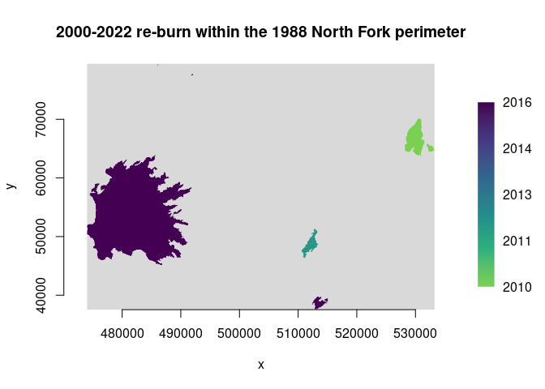

Draft Bindings to the GDAL/OGR Vector API
Source:vignettes/articles/gdalvector-draft.Rmd
gdalvector-draft.RmdChris Toney (chris.toney at usda.gov)
Last modified: 2024-04-28
Comment/discussion: https://github.com/USDAForestService/gdalraster/issues/241
Summary
This document describes R bindings to the GDAL/OGR Vector API proposed for inclusion in package gdalraster, analogous to its existing raster support. A package providing low-level access to both the raster and vector APIs in GDAL should be of interest to developers creating higher level interfaces. For example, custom workflows that are I/O intensive may benefit from direct access to GDAL’s I/O capabilities. R bindings to the vector API would support persistent connections to the data store, cursors with attribute and spatial filtering, transactions, feature-level insert/delete, update of attributes and geometries, and OGR facilities for geoprocessing. Calling signatures of a class-based interface will resemble the C++ and Python APIs provided by the GDAL project. It is intended that bindings in gdalraster should provide long-term API stability while tracking changes in GDAL.
A proposed interface is described in terms of the GDAL Vector Data
Model, along with a draft class definition for implementation via
RCPP_EXPOSED_CLASS. A prototype of the bindings is in the
gdalvector branch at https://github.com/USDAForestService/gdalraster/tree/gdalvector.
The prototype bindings are currently undocumented. Code examples are
included here to demonstrate usage and proof-of-concept. Installation of
the development version of gdalraster containing the
prototype vector bindings could be done with:
remotes::install_github("USDAForestService/gdalraster", ref = "gdalvector")Description of the interface
Bindings will be implemented with Rcpp modules
including RCPP_EXPOSED_CLASS. Exposing C++ classes directly
in R provides a natural interface to the underlying object model.
A GDAL Dataset for vector is a file or database containing one or more OGR layers. A vector dataset is represented in R as a data source name (DSN), a character string that may be a filename, database connection string, URL, virtual file, etc. Management of datasets and their vector schemas will be done with:
- existing management functions in gdalraster that
operate on vector datasets:
copyDatasetFiles(),deleteDataset(),renameDataset()andaddFilesInZip()(supports SOZip) - existing internal utility functions to be further developed
(potentially renamed/refactored):
.ogr_ds_exists(),.create_ogr(),.ogr_ds_layer_count(),.ogr_layer_exists(),.ogr_layer_create(),.ogr_layer_delete().ogr_field_index(),.ogr_field_create() - existing wrappers
ogr2ogr()andogrinfo()from the gdal_utils.h API (gdalraster 1.10.0 CRAN release) - add
ogr_execute_sql(): execute an SQL statement against the data store forCREATE INDEX,DROP INDEX,ALTER TABLE,DROP TABLE(a SQLSELECTstatement can be used in the constructor for classGDALVectordescribed below, to open a layer of features) - other stand-alone functions TBD
OGR Layer class represents a layer of features within a data source.
It will be modeled in R as class GDALVector, an exposed C++
class encapsulating an OGR Layer and the GDAL Dataset that owns it. A
GDALVector object will persist an open connection to the
dataset and expose methods for retrieving layer information, setting
attribute and spatial filters, reading/writing features, and layer
geoprocessing. A draft definition for class GDALVector is
given below.
All features in an OGR Layer share a common schema (feature class) modeled in GDAL as OGR Feature Definition. A feature class definition includes the set of attribute fields and their data types, the geometry field(s), and a feature class name (normally used as a layer name). The feature class definition is represented as a list in R, having as names the attribute/geometry field names, with each list element holding a field definition.
An attribute field definition is a list with named elements:
$type : OGR Field Type ("OFTString", "OFTInteger", ...)
$subtype : optional ("OFSTBoolean", ...)
$width : optional max number of characters
$precision : optional number of digits after the decimal point
$is_nullable: optional NOT NULL constraint (logical scalar)
$is_unique : optional UNIQUE constraint (logical scalar)
$default : optional field default value as character string
$is_ignored : whether ignored when retrieving features (logical scalar)
$domain : optional domain name
$is_geom : FALSE for attribute fieldsA geometry field definition is a list with named elements:
$type : geom type ("Point", "Polygon", etc.)
$srs : optional spatial reference as WKT string
$is_nullable: optional NOT NULL constraint (logical scalar)
$is_ignored : whether ignored when retrieving features (logical scalar)
$is_geom : TRUE for geometry fieldsAn OGR Feature – as read by GDALVector::getNextFeature()
or GDALVector::getFeature(), or as passed to write methods
– is a list with the unique feature identifier (FID), attribute and
geometry field names, and their values.
GDALVector::getFeatureSet() will return a set of features
as a data frame.
An OGR Geometry is represented in R as a character string containing
OGC Well Known Text (WKT). Likewise, an OGR Spatial Reference, which
encapsulates the definition of a projection and datum, is represented in
R as WKT. gdalraster has existing functions for working
with spatial reference systems as WKT (srs_to_wkt(),
srs_is_projected(), etc.), and a set of geometry
convenience functions also operating on WKT (GEOS via GDAL headers).
class GDALVector
The draft class definition below has been partially implemented in:
https://github.com/USDAForestService/gdalraster/blob/gdalvector/src/gdalvector.cpp
The header file can be referenced for the public class methods that have been implemented so far in the prototype (a subset of the draft class definition below):
https://github.com/USDAForestService/gdalraster/blob/gdalvector/src/gdalvector.h
This does not include definitions of several stand-alone functions
that will provide schema management. The existing definitions in
src/ogr_util.h are a starting point for those. An
Rcpp .finalizer function will be
implemented to properly release resources in case an object of class
GDALVector is garbage collected without an explicit call to
close(). Support for 64-bit integers requires
bit64 on the R side, with conversions in C++ using
RcppInt64.
class GDALVector {
private:
std::string dsn_in;
std::string layer_in; // layer name or sql statement
bool is_sql_in;
Rcpp::CharacterVector open_options_in;
std::string spatial_filter_in;
std::string dialect_in;
GDALDatasetH hDataset;
GDALAccess eAccess;
OGRLayerH hLayer;
OGRFeatureDefnH hFDefn;
public:
GDALVector();
explicit GDALVector(Rcpp::CharacterVector dsn);
GDALVector(Rcpp::CharacterVector dsn, std::string layer);
GDALVector(Rcpp::CharacterVector dsn, std::string layer, bool read_only);
GDALVector(Rcpp::CharacterVector dsn, std::string layer, bool read_only,
Rcpp::CharacterVector open_options);
GDALVector(Rcpp::CharacterVector dsn, std::string layer, bool read_only,
Rcpp::Nullable<Rcpp::CharacterVector> open_options,
std::string spatial_filter, std::string dialect);
void open(bool read_only);
bool isOpen() const;
std::string getDsn() const;
Rcpp::CharacterVector getFileList() const;
std::string getDriverShortName() const;
std::string getDriverLongName() const;
std::string getName() const;
bool testCapability(std::string capability) const;
std::string getFIDColumn() const;
std::string getGeomType() const;
std::string getGeometryColumn() const;
std::string getSpatialRef() const;
Rcpp::NumericVector bbox();
Rcpp::List getLayerDefn() const;
void setAttributeFilter(std::string query);
void setSpatialFilterRect(Rcpp::NumericVector bbox);
void setSpatialFilter(std::string wkt);
std::string getSpatialFilter() const;
void clearSpatialFilter();
double getFeatureCount();
SEXP getNextFeature();
void resetReading();
SEXP getFeature(int64_t fid);
void setNextByIndex(int64_t fid);
void setIgnoredFields(Rcpp::CharacterVector fields);
Rcpp::DataFrame getFeatureSet(Rcpp::CharacterVector fields,
bool geom_column);
// initialize an empty feature as list:
Rcpp::List initFeature();
// the following return the FID of the affected feature if successful
// create and write a new feature within a layer:
int64_t createFeature(Rcpp::List feat);
// rewrite/replace an existing feature:
int64_t setFeature(Rcpp::List feat);
// rewrite/replace an existing feature or create a new feature:
int64_t upsertFeature(Rcpp::List feat);
// delete feature from layer:
int64_t deleteFeature(int64_t fid);
bool startTransaction(bool force);
bool commitTransaction();
bool rollbackTransaction();
void layerIntersection(
GDALVector method_layer,
GDALVector result_layer,
bool quiet,
Rcpp::Nullable<Rcpp::CharacterVector> options);
void layerUnion(
GDALVector method_layer,
GDALVector result_layer,
bool quiet,
Rcpp::Nullable<Rcpp::CharacterVector> options);
void layerSymDifference(
GDALVector method_layer,
GDALVector result_layer,
bool quiet,
Rcpp::Nullable<Rcpp::CharacterVector> options);
void layerIdentity(
GDALVector method_layer,
GDALVector result_layer,
bool quiet,
Rcpp::Nullable<Rcpp::CharacterVector> options);
void layerUpdate(
GDALVector method_layer,
GDALVector result_layer,
bool quiet,
Rcpp::Nullable<Rcpp::CharacterVector> options);
void layerClip(
GDALVector method_layer,
GDALVector result_layer,
bool quiet,
Rcpp::Nullable<Rcpp::CharacterVector> options);
void layerErase(
GDALVector method_layer,
GDALVector result_layer,
bool quiet,
Rcpp::Nullable<Rcpp::CharacterVector> options);
void close();
// methods for internal use not exported to R
void _checkAccess(GDALAccess access_needed) const;
OGRLayerH _getOGRLayerH();
};
RCPP_EXPOSED_CLASS(GDALVector)Example: usage for class GDALVector
## usage for GDALVector class
library(gdalraster)
#> GDAL 3.8.4, released 2024/02/08, GEOS 3.12.1, PROJ 9.3.1
# MTBS fires in Yellowstone National Park 1984-2022
f <- system.file("extdata/ynp_fires_1984_2022.gpkg", package="gdalraster")
# copy to a temporary in-memory file that is writeable
dsn <- paste0("/vsimem/", basename(f))
vsi_copy_file(f, dsn)
lyr <- new(GDALVector, dsn, "mtbs_perims")
# object of class GDALVector
lyr
#> C++ object <0x58a6a88edc80> of class 'GDALVector' <0x58a6a2fce150>
str(lyr)
#> Reference class 'Rcpp_GDALVector' [package "gdalraster"] with 0 fields
#> list()
#> and 44 methods, of which 30 are possibly relevant:
#> bbox, clearSpatialFilter, close, finalize, getDriverLongName,
#> getDriverShortName, getDsn, getFeatureCount, getFIDColumn, getFileList,
#> getGeometryColumn, getGeomType, getLayerDefn, getName, getNextFeature,
#> getSpatialRef, initialize, isOpen, layerClip, layerErase, layerIdentity,
#> layerIntersection, layerSymDifference, layerUnion, layerUpdate, open,
#> resetReading, setAttributeFilter, setSpatialFilterRect, testCapability
# dataset info
lyr$getDriverShortName()
#> [1] "GPKG"
lyr$getDriverLongName()
#> [1] "GeoPackage"
lyr$getFileList()
#> [1] "/vsimem/ynp_fires_1984_2022.gpkg"
# layer info
lyr$getName()
#> [1] "mtbs_perims"
lyr$getGeomType()
#> [1] "Multi Polygon"
lyr$getGeometryColumn()
#> [1] "geom"
lyr$getFIDColumn()
#> [1] "fid"
lyr$getSpatialRef()
#> [1] "PROJCS[\"NAD83 / Montana\",GEOGCS[\"NAD83\",DATUM[\"North_American_Datum_1983\",SPHEROID[\"GRS 1980\",6378137,298.257222101,AUTHORITY[\"EPSG\",\"7019\"]],AUTHORITY[\"EPSG\",\"6269\"]],PRIMEM[\"Greenwich\",0,AUTHORITY[\"EPSG\",\"8901\"]],UNIT[\"degree\",0.0174532925199433,AUTHORITY[\"EPSG\",\"9122\"]],AUTHORITY[\"EPSG\",\"4269\"]],PROJECTION[\"Lambert_Conformal_Conic_2SP\"],PARAMETER[\"latitude_of_origin\",44.25],PARAMETER[\"central_meridian\",-109.5],PARAMETER[\"standard_parallel_1\",49],PARAMETER[\"standard_parallel_2\",45],PARAMETER[\"false_easting\",600000],PARAMETER[\"false_northing\",0],UNIT[\"metre\",1,AUTHORITY[\"EPSG\",\"9001\"]],AXIS[\"Easting\",EAST],AXIS[\"Northing\",NORTH],AUTHORITY[\"EPSG\",\"32100\"]]"
lyr$bbox()
#> [1] 469685.73 -12917.76 573531.72 96577.34
# layer capabilities
lyr$testCapability("RandomRead")
#> [1] TRUE
lyr$testCapability("FastSpatialFilter")
#> [1] TRUE
lyr$testCapability("FastFeatureCount")
#> [1] TRUE
lyr$testCapability("FastGetExtent")
#> [1] TRUE
lyr$testCapability("Transactions")
#> [1] TRUE
# the dataset was opened read-only:
lyr$testCapability("SequentialWrite")
#> [1] FALSE
lyr$testCapability("RandomWrite")
#> [1] FALSE
# re-open with write access
lyr$open(read_only = FALSE)
lyr$testCapability("SequentialWrite")
#> [1] TRUE
lyr$testCapability("RandomWrite")
#> [1] TRUE
# feature class definition - a list of fields and their definitions
defn <- lyr$getLayerDefn()
names(defn)
#> [1] "event_id" "incid_name" "incid_type" "map_id" "burn_bnd_ac"
#> [6] "burn_bnd_lat" "burn_bnd_lon" "ig_date" "ig_year" "geom"
# each list element holds a field definition list
str(defn)
#> List of 10
#> $ event_id :List of 8
#> ..$ type : chr "OFTString"
#> ..$ width : int 254
#> ..$ precision : int 0
#> ..$ is_nullable: logi TRUE
#> ..$ is_unique : logi FALSE
#> ..$ default : chr ""
#> ..$ is_ignored : logi FALSE
#> ..$ is_geom : logi FALSE
#> $ incid_name :List of 8
#> ..$ type : chr "OFTString"
#> ..$ width : int 254
#> ..$ precision : int 0
#> ..$ is_nullable: logi TRUE
#> ..$ is_unique : logi FALSE
#> ..$ default : chr ""
#> ..$ is_ignored : logi FALSE
#> ..$ is_geom : logi FALSE
#> $ incid_type :List of 8
#> ..$ type : chr "OFTString"
#> ..$ width : int 254
#> ..$ precision : int 0
#> ..$ is_nullable: logi TRUE
#> ..$ is_unique : logi FALSE
#> ..$ default : chr ""
#> ..$ is_ignored : logi FALSE
#> ..$ is_geom : logi FALSE
#> $ map_id :List of 8
#> ..$ type : chr "OFTInteger64"
#> ..$ width : int 0
#> ..$ precision : int 0
#> ..$ is_nullable: logi TRUE
#> ..$ is_unique : logi FALSE
#> ..$ default : chr ""
#> ..$ is_ignored : logi FALSE
#> ..$ is_geom : logi FALSE
#> $ burn_bnd_ac :List of 8
#> ..$ type : chr "OFTInteger64"
#> ..$ width : int 0
#> ..$ precision : int 0
#> ..$ is_nullable: logi TRUE
#> ..$ is_unique : logi FALSE
#> ..$ default : chr ""
#> ..$ is_ignored : logi FALSE
#> ..$ is_geom : logi FALSE
#> $ burn_bnd_lat:List of 8
#> ..$ type : chr "OFTString"
#> ..$ width : int 10
#> ..$ precision : int 0
#> ..$ is_nullable: logi TRUE
#> ..$ is_unique : logi FALSE
#> ..$ default : chr ""
#> ..$ is_ignored : logi FALSE
#> ..$ is_geom : logi FALSE
#> $ burn_bnd_lon:List of 8
#> ..$ type : chr "OFTString"
#> ..$ width : int 10
#> ..$ precision : int 0
#> ..$ is_nullable: logi TRUE
#> ..$ is_unique : logi FALSE
#> ..$ default : chr ""
#> ..$ is_ignored : logi FALSE
#> ..$ is_geom : logi FALSE
#> $ ig_date :List of 8
#> ..$ type : chr "default (read as OFTString)"
#> ..$ width : int 0
#> ..$ precision : int 0
#> ..$ is_nullable: logi TRUE
#> ..$ is_unique : logi FALSE
#> ..$ default : chr ""
#> ..$ is_ignored : logi FALSE
#> ..$ is_geom : logi FALSE
#> $ ig_year :List of 8
#> ..$ type : chr "OFTInteger"
#> ..$ width : int 0
#> ..$ precision : int 0
#> ..$ is_nullable: logi TRUE
#> ..$ is_unique : logi FALSE
#> ..$ default : chr ""
#> ..$ is_ignored : logi FALSE
#> ..$ is_geom : logi FALSE
#> $ geom :List of 5
#> ..$ type : chr "Multi Polygon"
#> ..$ srs : chr "PROJCS[\"NAD83 / Montana\",GEOGCS[\"NAD83\",DATUM[\"North_American_Datum_1983\",SPHEROID[\"GRS 1980\",6378137,2"| __truncated__
#> ..$ is_nullable: logi TRUE
#> ..$ is_ignored : logi FALSE
#> ..$ is_geom : logi TRUE
lyr$getFeatureCount()
#> [1] 61
# cursor
feat <- lyr$getNextFeature()
# a list of field names and their values
str(feat)
#> List of 11
#> $ FID :integer64 1
#> $ event_id : chr "WY4413411069519870807"
#> $ incid_name : chr "POLECAT"
#> $ incid_type : chr "Wildfire"
#> $ map_id :integer64 10015934
#> $ burn_bnd_ac :integer64 1093
#> $ burn_bnd_lat: chr "44.132"
#> $ burn_bnd_lon: chr "-110.696"
#> $ ig_date : chr "1987/08/07"
#> $ ig_year : int 1987
#> $ geom : chr "MULTIPOLYGON (((503099.439579653 -12893.9672899192,503169.756694236 -12756.3721247327,502689.845907435 -12131.5"| __truncated__
# attribute filter
lyr$setAttributeFilter("ig_year = 2020")
lyr$getFeatureCount()
#> [1] 1
feat <- lyr$getNextFeature()
str(feat)
#> List of 11
#> $ FID :integer64 61
#> $ event_id : chr "WY4438911082120200822"
#> $ incid_name : chr "LONE STAR"
#> $ incid_type : chr "Wildfire"
#> $ map_id :integer64 10020495
#> $ burn_bnd_ac :integer64 3348
#> $ burn_bnd_lat: chr "44.4"
#> $ burn_bnd_lon: chr "-110.782"
#> $ ig_date : chr "2020/08/22"
#> $ ig_year : int 2020
#> $ geom : chr "MULTIPOLYGON (((496593.122306971 15506.8828590633,496491.761299067 15605.3612548792,496290.812130161 15388.0465"| __truncated__
# NULL if no more features are available
feat <- lyr$getNextFeature()
str(feat)
#> NULL
# reset reading to the start
lyr$resetReading()
feat <- lyr$getNextFeature()
str(feat)
#> List of 11
#> $ FID :integer64 61
#> $ event_id : chr "WY4438911082120200822"
#> $ incid_name : chr "LONE STAR"
#> $ incid_type : chr "Wildfire"
#> $ map_id :integer64 10020495
#> $ burn_bnd_ac :integer64 3348
#> $ burn_bnd_lat: chr "44.4"
#> $ burn_bnd_lon: chr "-110.782"
#> $ ig_date : chr "2020/08/22"
#> $ ig_year : int 2020
#> $ geom : chr "MULTIPOLYGON (((496593.122306971 15506.8828590633,496491.761299067 15605.3612548792,496290.812130161 15388.0465"| __truncated__
# clear attribute filter
lyr$setAttributeFilter("")
lyr$getFeatureCount()
#> [1] 61
# spatial filter
# get the bounding box of the largest 1988 fire
lyr$setAttributeFilter("ig_year = 1988 ORDER BY burn_bnd_ac DESC")
feat <- lyr$getNextFeature()
str(feat)
#> List of 11
#> $ FID :integer64 7
#> $ event_id : chr "WY4470811082119880722"
#> $ incid_name : chr "NORTH FORK"
#> $ incid_type : chr "Wildfire"
#> $ map_id :integer64 10014217
#> $ burn_bnd_ac :integer64 563527
#> $ burn_bnd_lat: chr "44.678"
#> $ burn_bnd_lon: chr "-110.716"
#> $ ig_date : chr "1988/07/22"
#> $ ig_year : int 1988
#> $ geom : chr "MULTIPOLYGON (((469685.969312071 29526.2354109807,469918.933844832 29654.3220754602,470030.299119989 29518.7441"| __truncated__
bbox <- bbox_from_wkt(feat$geom)
print(bbox)
#> [1] 469685.97 11442.45 544069.63 85508.15
# clear the attribute filter
lyr$setAttributeFilter("")
lyr$getFeatureCount()
#> [1] 61
lyr$setSpatialFilterRect(bbox)
lyr$getFeatureCount()
#> [1] 40
lyr$clearSpatialFilter()
lyr$getFeatureCount()
#> [1] 61
lyr$close()
vsi_unlink(dsn)Created on 2024-04-06 with reprex v2.1.0
Example: layer geoprocessing
## layer intersection example
library(gdalraster)
#> GDAL 3.8.4, released 2024/02/08, GEOS 3.12.1, PROJ 9.3.1
# MTBS fires in Yellowstone National Park 1984-2022
dsn <- system.file("extdata/ynp_fires_1984_2022.gpkg", package="gdalraster")
lyr <- new(GDALVector, dsn, "mtbs_perims")
# largest 1988 fire (FID = 7 from the example above)
feat <- lyr$getFeature(7)
str(feat)
#> List of 11
#> $ FID :integer64 7
#> $ event_id : chr "WY4470811082119880722"
#> $ incid_name : chr "NORTH FORK"
#> $ incid_type : chr "Wildfire"
#> $ map_id :integer64 10014217
#> $ burn_bnd_ac :integer64 563527
#> $ burn_bnd_lat: chr "44.678"
#> $ burn_bnd_lon: chr "-110.716"
#> $ ig_date : chr "1988/07/22"
#> $ ig_year : int 1988
#> $ geom : chr "MULTIPOLYGON (((469685.969312071 29526.2354109807,469918.933844832 29654.3220754602,470030.299119989 29518.7441"| __truncated__
# get a second layer for 2000-2022 fires
# the layer argument can be a sql statement
sql <- "SELECT FID, * FROM mtbs_perims WHERE ig_year >= 2000 ORDER BY mtbs_perims.ig_year"
lyr2 <- new(GDALVector, dsn, sql)
lyr2$getFeatureCount()
#> [1] 40
# create an output layer using a temporary in-memory dataset
dsn_out <- "/vsimem/lyr_proc_tmp.gpkg"
srs <- lyr$getSpatialRef()
# this uses existing internal OGR utilities
gdalraster:::.create_ogr("GPKG", dsn_out, 0, 0, 0, "Unknown", "result_layer", srs)
#> [1] TRUE
gdalraster:::.ogr_ds_exists(dsn_out, with_update = TRUE)
#> [1] TRUE
gdalraster:::.ogr_layer_exists(dsn_out, "result_layer")
#> [1] TRUE
lyr_out <- new(GDALVector, dsn_out, "result_layer", read_only = FALSE)
lyr_out$getFeatureCount()
#> [1] 0
# intersection of lyr and lyr2, with result in lyr_out
lyr$layerIntersection(lyr2, lyr_out, quiet = FALSE, options = NULL)
#> 0...10...20...30...40...50...60...70...80...90...100 - done.
lyr_out$getFeatureCount()
#> [1] 5
defn <- lyr_out$getLayerDefn()
# combined attributes
names(defn)
#> [1] "input_event_id" "input_incid_name" "input_incid_type"
#> [4] "input_map_id" "input_burn_bnd_ac" "input_burn_bnd_lat"
#> [7] "input_burn_bnd_lon" "input_ig_date" "input_ig_year"
#> [10] "method_event_id" "method_incid_name" "method_incid_type"
#> [13] "method_map_id" "method_burn_bnd_ac" "method_burn_bnd_lat"
#> [16] "method_burn_bnd_lon" "method_ig_date" "method_ig_year"
#> [19] "geom"
# we don't have vector plotting yet, so rasterize and use plot_raster()
out_file <- "/vsimem/result_layer.tif"
rasterize(src_dsn = dsn_out,
dstfile = out_file,
layer = "result_layer",
burn_attr = "method_ig_year",
tr = c(90,90),
tap = TRUE,
dtName = "Int16",
dstnodata = -9999,
init = -9999)
#> 0...10...20...30...40...50...60...70...80...90...100 - done.
ds <- new(GDALRaster, out_file)
pal <- scales::viridis_pal(end = 0.8, direction = -1)(6)
ramp <- scales::colour_ramp(pal)
plot_raster(ds, legend = TRUE, col_map_fn = ramp, na_col = "#d9d9d9",
main="2000-2022 re-burn within the 1988 North Fork perimeter")
ds$close()
lyr$close()
lyr2$close()
lyr_out$close()
vsi_unlink(dsn_out)
vsi_unlink(out_file)Created on 2024-04-06 with reprex v2.1.0
Example: WorldCover Sentinel-2 composites
## WorldCover Sentinel-2 annual composites
## https://blog.vito.be/remotesensing/worldcover-annual-composites
## tile index lookup on remote filesystem and obtain raster data
library(gdalraster)
#> GDAL 3.8.4, released 2024/02/08, GEOS 3.12.1, PROJ 9.3.1
fgb = "/vsicurl/https://esa-worldcover.s3.eu-central-1.amazonaws.com/esa_worldcover_grid_composites.fgb"
lyr_tiles <- new(GDALVector, fgb)
lyr_tiles$getDriverShortName()
#> [1] "FlatGeobuf"
lyr_tiles$getName()
#> [1] "worldcover_composites_grid_aws"
lyr_tiles$getGeomType()
#> [1] "Polygon"
lyr_tiles$getSpatialRef()
#> [1] "GEOGCS[\"WGS 84\",DATUM[\"WGS_1984\",SPHEROID[\"WGS 84\",6378137,298.257223563,AUTHORITY[\"EPSG\",\"7030\"]],AUTHORITY[\"EPSG\",\"6326\"]],PRIMEM[\"Greenwich\",0,AUTHORITY[\"EPSG\",\"8901\"]],UNIT[\"degree\",0.0174532925199433,AUTHORITY[\"EPSG\",\"9122\"]],AXIS[\"Latitude\",NORTH],AXIS[\"Longitude\",EAST],AUTHORITY[\"EPSG\",\"4326\"]]"
lyr_tiles$testCapability("RandomRead")
#> [1] TRUE
lyr_tiles$testCapability("FastSpatialFilter")
#> [1] TRUE
lyr_tiles$testCapability("FastFeatureCount")
#> [1] TRUE
lyr_tiles$testCapability("FastGetExtent")
#> [1] TRUE
lyr_tiles$getFeatureCount()
#> [1] 19363
lyr_tiles$bbox()
#> [1] -180 -60 180 83
defn <- lyr_tiles$getLayerDefn()
names(defn)
#> [1] "tile" "s1_vvvhratio_2020" "s1_vvvhratio_2021"
#> [4] "s2_rgbnir_2020" "s2_rgbnir_2021" "s2_ndvi_2020"
#> [7] "s2_ndvi_2021" "s2_swir_2020" "s2_swir_2021"
#> [10] ""
# AOI for the Fishhawk fire
dsn <- system.file("extdata/ynp_fires_1984_2022.gpkg", package="gdalraster")
lyr_ynp <- new(GDALVector, dsn, "mtbs_perims")
lyr_ynp$setAttributeFilter("incid_name = 'FISHHAWK'")
lyr_ynp$getFeatureCount()
#> [1] 1
feat <- lyr_ynp$getNextFeature()
str(feat)
#> List of 11
#> $ FID :integer64 60
#> $ event_id : chr "WY4437710988020190902"
#> $ incid_name : chr "FISHHAWK"
#> $ incid_type : chr "Wildfire"
#> $ map_id :integer64 10016957
#> $ burn_bnd_ac :integer64 10775
#> $ burn_bnd_lat: chr "44.384"
#> $ burn_bnd_lon: chr "-109.85"
#> $ ig_date : chr "2019/09/02"
#> $ ig_year : int 2019
#> $ geom : chr "MULTIPOLYGON (((573530.585472236 9160.22088906913,573266.183153384 9415.42216938034,573137.427110327 9285.44517"| __truncated__
# get the feature bbox in WGS84
bb <- g_transform(feat$geom, lyr_ynp$getSpatialRef(), epsg_to_wkt(4326)) |>
bbox_from_wkt()
print(bb)
#> [1] -109.89753 44.32714 -109.83172 44.44030
# tile index lookup
lyr_tiles$setSpatialFilterRect(bb)
lyr_tiles$getFeatureCount()
#> [1] 1
feat <- lyr_tiles$getNextFeature()
str(feat)
#> List of 11
#> $ FID :integer64 16615
#> $ tile : chr "N44W110"
#> $ s1_vvvhratio_2020: chr "s3://esa-worldcover-s1/vvvhratio/2020/N44/ESA_WorldCover_10m_2020_v100_N44W110_S1VVVHratio.tif"
#> $ s1_vvvhratio_2021: chr "s3://esa-worldcover-s1/vvvhratio/2021/N44/ESA_WorldCover_10m_2021_v200_N44W110_S1VVVHratio.tif"
#> $ s2_rgbnir_2020 : chr "s3://esa-worldcover-s2/rgbnir/2020/N44/ESA_WorldCover_10m_2020_v100_N44W110_S2RGBNIR.tif"
#> $ s2_rgbnir_2021 : chr "s3://esa-worldcover-s2/rgbnir/2021/N44/ESA_WorldCover_10m_2021_v200_N44W110_S2RGBNIR.tif"
#> $ s2_ndvi_2020 : chr "s3://esa-worldcover-s2/ndvi/2020/N44/ESA_WorldCover_10m_2020_v100_N44W110_NDVI.tif"
#> $ s2_ndvi_2021 : chr "s3://esa-worldcover-s2/ndvi/2021/N44/ESA_WorldCover_10m_2021_v200_N44W110_NDVI.tif"
#> $ s2_swir_2020 : chr "s3://esa-worldcover-s2/swir/2020/N44/ESA_WorldCover_10m_2020_v100_N44W110_SWIR.tif"
#> $ s2_swir_2021 : chr "s3://esa-worldcover-s2/swir/2021/N44/ESA_WorldCover_10m_2021_v200_N44W110_SWIR.tif"
#> $ : chr "POLYGON ((-110 44,-110 45,-109 45,-109 44,-110 44))"
# get the Sentinel-2 RGBNIR composite for this AOI
tif_file <- sub("s3://", "/vsis3/", feat$s2_rgbnir_2021, fixed = TRUE)
print(tif_file)
#> [1] "/vsis3/esa-worldcover-s2/rgbnir/2021/N44/ESA_WorldCover_10m_2021_v200_N44W110_S2RGBNIR.tif"
# public bucket so disable request signing
set_config_option("AWS_NO_SIGN_REQUEST", "YES")
# check if file exists and get size in MB
vsi_stat(tif_file)
#> [1] TRUE
vsi_stat(tif_file, "size") / (1000 * 1000)
#> [1] 562.039
# copy to a local or remote filesystem, e.g.,
# tif_copy <- file.path(tempdir(), basename(tif_file))
# vsi_copy_file(tif_file, tif_copy, show_progress = TRUE)
# or open the dataset for reading
ds <- new(GDALRaster, tif_file)
ds$dim()
#> [1] 12000 12000 4
ds$getMetadata(band=0, domain="")
#> [1] "algorithm_version=V2.0.0"
#> [2] "AREA_OR_POINT=Area"
#> [3] "bands=Band 1: B04 (Red), Band 2: B03 (Green), Band 3: B02 (Blue), Band 4: B08 (Infrared)"
#> [4] "copyright=ESA WorldCover project 2021 / Contains modified Copernicus Sentinel data (2021) processed by ESA WorldCover consortium"
#> [5] "creation_time=2022-12-09 17:08:25.881589"
#> [6] "description=The ESA WorldCover Sentinel-2 median L2A (RGBNIR) composite is a color image made from images in Blue (B02), Green (B03), Red (B04) and Infrared (B08). "
#> [7] "license=CC-BY 4.0 - https://creativecommons.org/licenses/by/4.0/"
#> [8] "product_crs=EPSG:4326"
#> [9] "product_grid=1x1 degree tiling grid"
#> [10] "product_tile=N44W110"
#> [11] "product_type=Sentinel-2 median L2A (RGBNIR) composite"
#> [12] "product_version=V2.0.0"
#> [13] "reference=https://esa-worldcover.org"
#> [14] "time_end=2021-12-31T23:59:59Z"
#> [15] "time_start=2021-01-01T00:00:00Z"
#> [16] "title=ESA WorldCover Sentinel-2 median L2A (RGBNIR) composite at 10m resolution for year 2021"
ds$getMetadata(band=0, domain="IMAGE_STRUCTURE")
#> [1] "COMPRESSION=DEFLATE" "INTERLEAVE=PIXEL" "LAYOUT=COG"
#> [4] "PREDICTOR=2"
r <- read_ds(ds, bands=c(4,1,2), out_xsize = 800, out_ysize = 800)
txt <- paste0(tools::file_path_sans_ext(basename(tif_file)),
"\n(color infrared B8-B4-B3)")
plot_raster(r,
minmax_pct_cut = c(2, 98),
xlab = "longitude",
ylab = "latitude",
main = txt)
ds$close()
lyr_ynp$close()
lyr_tiles$close()Created on 2024-04-06 with reprex v2.1.0
Further consideration / TBD
This is a working list of potential issues and design questions that need further consideration, to be determined:
- handling of 64-bit integer: OGR FID currently is
GIntBigand integer fields in vector data sources will commonly beOFTInteger64. These are now handled using RcppInt64, with bit64 on the R side providing S3 classinteger64. - OGR’s Arrow C interface: Implement
GDALVector::getArrowStream()(GDAL >= 3.6) andGDALVector::writeArrowBatch()(GDAL >= 3.8), supported on the R side with package nanoarrow. - potential output vectors of GEOS or OGR pointers, WKB with support by wk
- OGR layer geoprocessing might be stand-alone functions instead of
class methods in
GDALVector. We would have more flexibility in terms of optional/argument defaults. Either way, we should add an option to create the output layer.
Document changelog
- add
GDALVector::setSpatialFilter()to the draft class definition - set spatial filter from WKT geometry (2024-03-02) - add comment in the layer intersection example re: feature retrieval by FID (2024-03-02)
- add arguments
fieldsandgeom_columninGDALVector::getFeatureSet()- optionally retrieve a subset of attribute fields, and specify whether to include geometry column(s) in the returned data frame (2024-03-02) - the return value of feature writing methods should be the FID of the
newly created/set/deleted feature upon successful write, or
OGRNullFIDon failure (2024-03-02) - add a note above
class GDALVectorre: handling of 64-bit integer types to be determined (2024-03-02) - add
GDALVector::setIgnoredFields(): set which fields can be omitted when retrieving features from the layer. If the driver supports this functionality (testable using OLCIgnoreFields capability), it will not fetch the specified fields in subsequent calls togetFeature()/getNextFeature()thus save some processing time and/or bandwidth. (2024-03-02) - add
ogr_execute_sql()for dataset/schema management (2024-03-02) - add
GDALVector::setNextByIndex()for cursor positioning (2024-03-03) - add
GDALVector::getSpatialFilter(): get the WKT geometry currently in use as the spatial filter, or""(2024-03-03) - add section “Further consideration / TBD” (2024-03-03)
-
ogr2ogr()andogrinfo()are available in 1.9.0.9080 dev (2024-03-04) - add potential output vectors of geos or ogr pointers, or wkb/wkt with support by {wk} (@mdsumner, 2024-03-04)
- add section “Contributors” (2024-03-04)
- add link to issue 241 for discussion thread (2024-03-05)
- OGR layer geoprocessing may be stand-alone functions instead of class methods TBD (2024-03-10)
- add link to the header file to reference the class methods that have been implemented so far in the prototype (2024-03-10)
-
ogr2ogr()andogrinfo()are available in gdalraster 1.10.0 on CRAN (2024-03-26) - initial int64 support; now linking to RcppInt64,
and importing bit64;
FIDandOFTInteger64fields are now returned in R asinteger64; updated the examples (2024-04-06) - add
GDALVector::getFeature(): fetch a feature from its FID (2024-04-06) - add a
GDALVectorclass constructor withspatial_filterand SQLdialectarguments (2024-04-28)